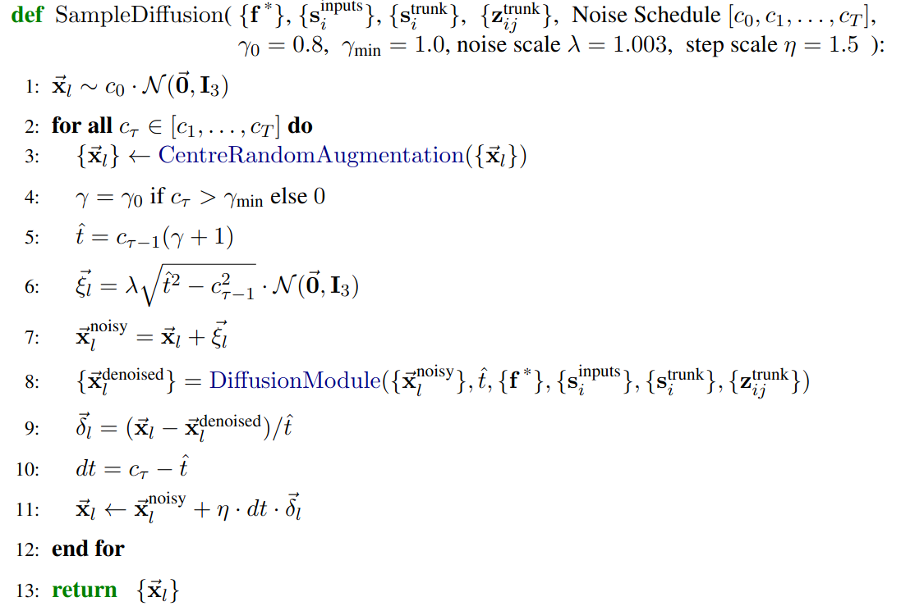
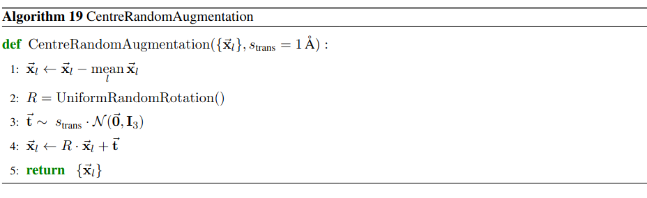
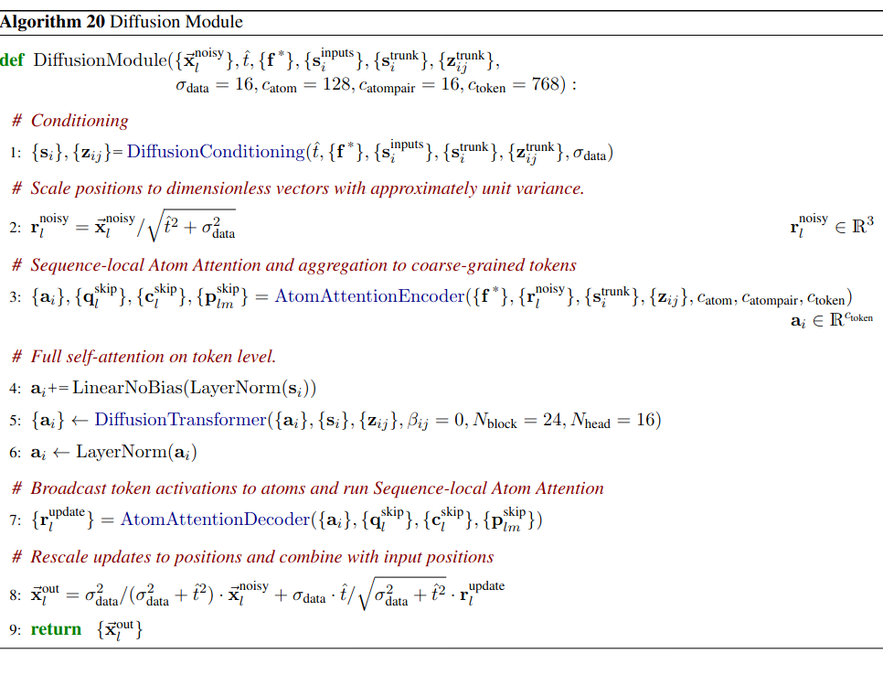

Alphafold-3 Diffusion
AF3 performs diffusion through the SampleDiffusion module. The diffusion loop is shown below:

Analysis
- (1) is sampling the initial location randomly from noise. \(c_0\) seems to be the starting constant
- (2) is using the CentralRandomAugmentation to randomly rotate and translate the initial noise.

- (1) is ensuring that the noisy data is centered at origin.
- (2) UniformRandomRotation() creates a random rotation matrix, (3) creates a random translation vector, (4,5) returns the final rotationally and translationally transformed vector.
- (4,5,6,7) is doing a weird additional inclusion of translational noise if the current noise-schedule is greater than some threshold \(\gamma_{min}\), which is by default 1.0.
- (8) is doing the major brunt of the diffusion work, through the DiffusionModule module.
Let us look at the DiffusionModule more carefully.
